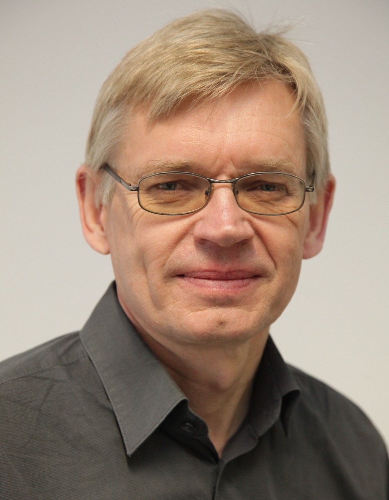

INPUT
Light of a matching wavelength
A photon is absorbed by the rhodopsin’s chromophore.
LIGHT-SENSING PROTEINS · EXPERIMENTAL BIOPHYSICS
A biophysicist whose study of algal photoreceptors helped reveal channelrhodopsins—the light-gated ion channels that became central tools in optogenetics.

WHY HE MATTERS
Hegemann investigated how microorganisms sense and respond to light. Characterising channelrhodopsins helped establish a direct bridge from a photon arriving at a protein to ions crossing a membrane—an unusually clean actuator for controlling selected cells.
A photon is absorbed by the rhodopsin’s chromophore.
The protein enters an open state and permits ion flow across the membrane.
Membrane voltage changes, creating a controllable biological response.
THREE-PASS REVIEW
Hegemann combines photobiology, spectroscopy and membrane biophysics. His career shows how close study of a microorganism’s sensory machinery can open an entirely new experimental language for neuroscience.
VERIFIED READING